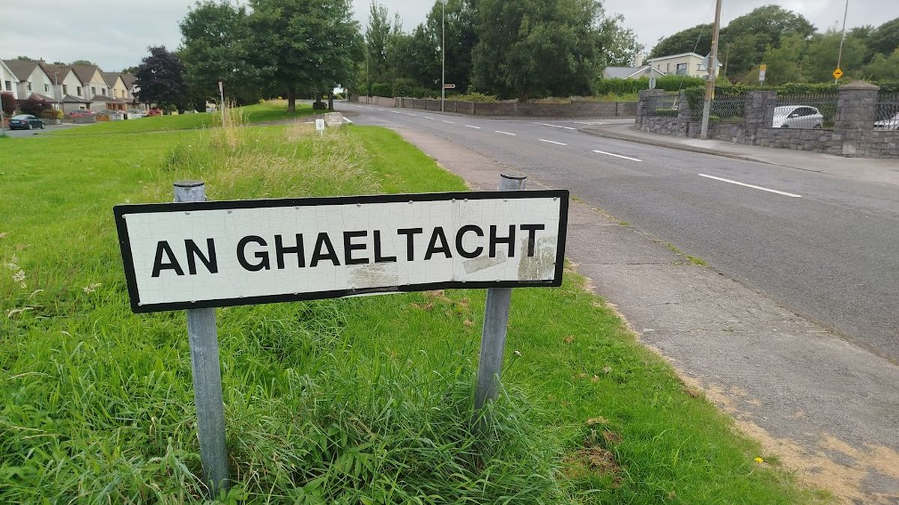
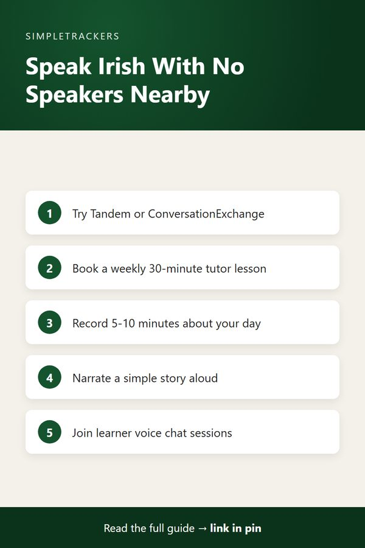
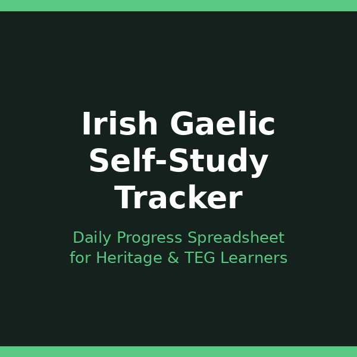

<!doctype html>
<html lang="en">
<head>
<script async src="https://pagead2.googlesyndication.com/pagead/js/adsbygoogle.js?client=ca-pub-7383810158576704" crossorigin="anonymous"></script>
<meta charset="utf-8">
<title>Irish Study FAQ: Questions Self-Taught Learners Ask</title>
<meta name="viewport" content="width=device-width, initial-scale=1">
<meta name="description" content="Answers to common questions from self-taught Irish learners: how long it takes, what to study first, dialects, resources, and staying motivated.">
<link rel="canonical" href="https://ghengoy.github.io/gaeilge-tracker/irish-study-faq.html">
<meta property="og:type" content="article">
<meta property="og:title" content="Irish Study FAQ: Questions Self-Taught Learners Ask">
<meta property="og:description" content="Answers to common questions from self-taught Irish learners: how long it takes, what to study first, dialects, resources, and staying motivated.">
<meta property="og:url" content="https://ghengoy.github.io/gaeilge-tracker/irish-study-faq.html">
<meta property="og:image" content="https://ghengoy.github.io/gaeilge-tracker/images/hero/irish-study-faq.jpg">
<meta name="p:domain_verify" content="ed2ca7fb71cecfffeba5d895002ee1d1"/>
<script data-goatcounter="https://ghengoy.goatcounter.com/count" async src="//gc.zgo.at/count.js"></script>
<style>
  :root { --accent: #14532D; --accent-dark: #0B331C; --tint: #E8F2EC; --ink: #1f2328; --muted: #5d6470;
          --line: #e4e1da; --paper: #fbfaf7; --card: #ffffff; }
  * { box-sizing: border-box; }
  body { margin: 0; background: var(--paper); color: var(--ink); font-family: -apple-system, BlinkMacSystemFont, "Segoe UI", Roboto, "Helvetica Neue", Arial, sans-serif;
         font-size: 18px; line-height: 1.75; -webkit-font-smoothing: antialiased; }
  a { color: var(--accent); text-underline-offset: 3px; }
  a:hover { color: var(--accent-dark); }
  img { max-width: 100%; height: auto; }
  .site-header { background: var(--card); border-bottom: 1px solid var(--line); }
  .site-header .inner { max-width: 760px; margin: 0 auto; padding: 14px 20px; display: flex; align-items: center; justify-content: space-between; gap: 16px; flex-wrap: wrap; }
  .brand { font-weight: 700; color: var(--ink); text-decoration: none; font-size: 17px; display: flex; align-items: center; gap: 10px; }
  .brand-mark { width: 28px; height: 28px; border-radius: 8px; background: var(--accent); display: inline-block; position: relative; }
  .brand-mark::after { content: ""; position: absolute; left: 7px; top: 8px; width: 14px; height: 3px; background: #fff; border-radius: 2px;
                       box-shadow: 0 5px 0 #fff, 0 10px 0 rgba(255,255,255,.6); }
  .site-header nav { display: flex; gap: 18px; font-size: 15px; }
  .site-header nav a { color: var(--muted); text-decoration: none; }
  .site-header nav a:hover { color: var(--accent); }
  main { max-width: 760px; margin: 0 auto; padding: 32px 20px 56px; }
  article > h1, main > h1 { font-size: clamp(30px, 5vw, 42px); line-height: 1.2; letter-spacing: -0.02em; margin: 8px 0 12px; }
  h2 { font-size: 27px; line-height: 1.3; letter-spacing: -0.01em; margin: 52px 0 14px; padding-top: 6px; scroll-margin-top: 16px; }
  h3 { font-size: 21px; line-height: 1.35; margin: 32px 0 8px; }
  p { margin: 0 0 20px; }
  ul, ol { padding-left: 1.3em; margin: 0 0 22px; }
  li { margin-bottom: 8px; }
  li::marker { color: var(--accent); }
  strong { font-weight: 650; }
  .pillar-link { font-size: 15px; margin: 0 0 4px; }
  .pillar-link a { text-decoration: none; }
  .post-meta { color: var(--muted); font-size: 15px; margin: 0 0 24px; }
  .post-hero { margin: 0 0 28px; }
  .post-hero img { width: 100%; aspect-ratio: 16 / 9; object-fit: cover; border-radius: 14px; display: block; background: var(--tint); }
  figcaption { font-size: 13px; color: var(--muted); margin-top: 8px; line-height: 1.5; }
  figcaption a { color: var(--muted); }
  .toc { background: var(--card); border: 1px solid var(--line); border-radius: 12px; padding: 18px 22px 8px; margin: 0 0 32px; font-size: 16px; }
  .toc-title { font-weight: 700; margin: 0 0 8px; font-size: 14px; letter-spacing: .06em; text-transform: uppercase; color: var(--muted); }
  .toc ol { margin: 0 0 10px; }
  .toc li { margin-bottom: 4px; }
  .toc a { text-decoration: none; }
  .key-takeaways, .callout { border-radius: 12px; padding: 20px 24px 6px; margin: 0 0 30px; }
  .key-takeaways { background: var(--tint); border-left: 5px solid var(--accent); }
  .key-takeaways ul { margin-bottom: 14px; }
  .box-title { font-weight: 700; margin: 0 0 8px; font-size: 14px; letter-spacing: .06em; text-transform: uppercase; color: var(--accent-dark); }
  .callout { background: var(--card); border: 1px solid var(--line); border-left: 5px solid var(--accent); }
  .callout.note { border-left-color: #b7791f; }
  .callout.note .box-title { color: #8a5a12; }
  .steps { list-style: none; counter-reset: step; padding-left: 0; }
  .steps > li { counter-increment: step; position: relative; padding-left: 52px; margin-bottom: 18px; }
  .steps > li::before { content: counter(step); position: absolute; left: 0; top: 0; width: 34px; height: 34px; border-radius: 50%;
                        background: var(--accent); color: #fff; font-weight: 700; font-size: 16px; display: flex; align-items: center; justify-content: center; }
  .table-wrap { overflow-x: auto; margin: 0 0 28px; border: 1px solid var(--line); border-radius: 12px; background: var(--card); }
  table { border-collapse: collapse; width: 100%; font-size: 16px; line-height: 1.5; }
  th, td { text-align: left; padding: 12px 16px; border-bottom: 1px solid var(--line); vertical-align: top; }
  th { background: var(--tint); color: var(--accent-dark); font-weight: 700; }
  tr:last-child td { border-bottom: 0; }
  .pin-figure { margin: 36px auto; max-width: 400px; text-align: center; }
  .pin-figure img { border-radius: 12px; box-shadow: 0 10px 30px rgba(0,0,0,.12); display: block; }
  blockquote { margin: 0 0 24px; padding: 4px 0 4px 20px; border-left: 3px solid var(--line); color: var(--muted); font-style: italic; }
  .post-cta { display: flex; gap: 24px; align-items: center; background: var(--card); border: 1px solid var(--line); border-top: 5px solid var(--accent);
              border-radius: 14px; padding: 24px; margin: 48px 0 8px; }
  .post-cta img { width: 150px; border-radius: 10px; flex-shrink: 0; }
  .post-cta h3 { margin: 2px 0 6px; }
  .post-cta p { margin-bottom: 12px; font-size: 16px; }
  .cta-kicker { font-size: 13px !important; letter-spacing: .06em; text-transform: uppercase; color: var(--muted); margin: 0 !important; }
  .buy-button { display: inline-block; background: var(--accent); color: #fff !important; padding: 12px 22px; border-radius: 10px; text-decoration: none; font-weight: 700; font-size: 16px; }
  .buy-button:hover { background: var(--accent-dark); }
  .product-box { background: var(--card); border: 1px solid var(--line); border-radius: 14px; padding: 24px; margin: 24px 0 36px; display: grid; grid-template-columns: 200px 1fr; gap: 0 24px; align-items: center; }
  .product-box img { width: 200px; border-radius: 10px; grid-row: span 3; }
  .product-box h3 { margin: 0 0 6px; }
  .product-box p { margin-bottom: 12px; font-size: 16px; }
  .product-grid { display: grid; grid-template-columns: repeat(auto-fill, minmax(160px, 1fr)); gap: 16px; margin: 12px 0 36px; }
  .product-card { display: flex; flex-direction: column; gap: 4px; background: var(--card); border: 1px solid var(--line); border-radius: 12px; padding: 12px; color: var(--ink); text-decoration: none; font-size: 15px; line-height: 1.4; }
  .product-card:hover { border-color: var(--accent); }
  .product-card img { width: 100%; border-radius: 8px; margin-bottom: 4px; }
  .product-card span { color: var(--muted); }
  .product-card .price { color: var(--accent); font-weight: 700; }
  .post-list { list-style: none; padding: 0; display: grid; gap: 16px; }
  .post-list li { margin: 0; }
  .post-card { display: flex; gap: 18px; background: var(--card); border: 1px solid var(--line); border-radius: 14px; overflow: hidden; color: var(--ink); text-decoration: none; }
  .post-card:hover { border-color: var(--accent); }
  .post-card img { width: 200px; object-fit: cover; flex-shrink: 0; background: var(--tint); }
  .post-card-text { display: flex; flex-direction: column; gap: 6px; padding: 16px 18px 16px 0; }
  .post-card-text strong { font-size: 19px; line-height: 1.35; }
  .post-card-desc { color: var(--muted); font-size: 15px; line-height: 1.55; }
  .post-card-date { color: var(--muted); font-size: 13px; }
  .site-footer { border-top: 1px solid var(--line); background: var(--card); color: var(--muted); font-size: 15px; }
  .site-footer .inner { max-width: 760px; margin: 0 auto; padding: 28px 20px; display: flex; justify-content: space-between; gap: 16px; flex-wrap: wrap; }
  .site-footer p { margin: 0; }
  @media (max-width: 600px) {
    body { font-size: 17px; }
    h2 { font-size: 23px; margin-top: 40px; }
    .post-cta, .post-card { flex-direction: column; }
    .post-cta img { width: 120px; }
    .post-card img { width: 100%; aspect-ratio: 16 / 9; }
    .post-card-text { padding: 0 16p
<header class="site-header"><div class="inner">
<a class="brand" href="index.html"><span class="brand-mark" aria-hidden="true"></span>Irish Self-Study</a>
<nav><a href="index.html">Guides</a><a href="pillar-guide.html">Start here</a></nav>
</div></header>
<main>
<article>
<h1>Irish Study FAQ: Questions Self-Taught Learners Ask</h1>
<p class="pillar-link"><a href="pillar-guide.html">&larr; Back to the Complete Irish Gaelic Study Guide</a></p>
<p class="post-meta"><time datetime="2026-08-09">August 9, 2026</time> &middot; 7 min read</p>
<figure class="post-hero"><figcaption>Photo: <a href="https://commons.wikimedia.org/w/index.php?curid=171917800" rel="nofollow">Sheila1988</a>, <a href="https://creativecommons.org/publicdomain/zero/1.0/deed.en/" rel="license nofollow">CC0</a></figcaption></figure>
<div class="key-takeaways">
<p class="box-title">Key takeaways</p>
<ul>
<li><strong>Time:</strong> the FSI estimates roughly 1,100 hours for professional working proficiency, about two years at 10 hours a week.</li>
<li><strong>Dialects:</strong> pick one (Connacht is a sensible default) and branch out around B1-B2.</li>
<li><strong>Grammar:</strong> VSO word order, mutations and prepositional pronouns are different, not impossible.</li>
<li><strong>Speaking without locals:</strong> use language exchange apps, online tutors, solo recordings and learner communities.</li>
<li><strong>Motivation:</strong> comes from connection and visible progress, so track what you do.</li>
</ul>
</div>
<nav class="toc" aria-label="Contents"><p class="toc-title">In this guide</p>
<ol>
<li><a href="#how-long-does-it-take-to-learn-irish">How long does it take to learn Irish?</a></li>
<li><a href="#should-i-focus-on-one-irish-dialect-or-learn-multiple">Should I focus on one Irish dialect, or learn multiple?</a></li>
<li><a href="#is-irish-grammar-really-that-hard">Is Irish grammar really that hard?</a></li>
<li><a href="#how-can-i-practice-speaking-without-irish-speakers-nearby">How can I practice speaking without Irish speakers nearby?</a></li>
<li><a href="#how-much-vocabulary-do-i-need-to-learn">How much vocabulary do I need to learn?</a></li>
<li><a href="#are-paid-apps-and-courses-worth-it-or-should-i-use-free-resources">Are paid apps and courses worth it, or should I use free resources?</a></li>
<li><a href="#how-do-i-avoid-the-intermediate-plateau">How do I avoid the "intermediate plateau"?</a></li>
<li><a href="#should-i-hire-a-tutor-or-can-i-learn-entirely-self-taught">Should I hire a tutor, or can I learn entirely self-taught?</a></li>
<li><a href="#what-if-i-m-worried-i-ll-never-reach-conversational-fluency">What if I'm worried I'll never reach conversational fluency?</a></li>
<li><a href="#how-do-i-stay-motivated-for-the-long-term">How do I stay motivated for the long term?</a></li>
<li><a href="#using-the-tracker-to-support-your-irish-learning">Using the Tracker to Support Your Irish Learning</a></li>
</ol></nav>
<h2 id="how-long-does-it-take-to-learn-irish">How long does it take to learn Irish?</h2>
<p>This depends entirely on your definition of "learn" and how intensely you study. The U.S. Foreign Service Institute estimates that English speakers need roughly 1,100 hours of study to reach professional working proficiency in Irish.</p>
<div class="table-wrap">
<table>
<thead><tr><th>Study per week</th><th>Time to ~1,100 hours</th></tr></thead>
<tbody>
<tr><td>5 hours</td><td>About four years</td></tr>
<tr><td>10 hours</td><td>About two years</td></tr>
<tr><td>15 hours</td><td>Roughly 18 months</td></tr>
</tbody>
</table>
</div>
<p>These are ballpark figures; some people move faster, others slower. Irish is a moderately difficult language for English speakers: more complex than Romance languages, but less complex than tonal languages or languages with entirely different writing systems. Time plus consistency are your friends.</p>

<h2 id="should-i-focus-on-one-irish-dialect-or-learn-multiple">Should I focus on one Irish dialect, or learn multiple?</h2>
<p>Irish has three main regional dialects. They differ in pronunciation, some vocabulary, and some grammatical features:</p>
<ul>
<li><strong>Connacht</strong> (Conamara)</li>
<li><strong>Ulster</strong> (Donegal)</li>
<li><strong>Munster</strong> (Cork/Kerry)</li>
</ul>
<p>Beginners are often paralyzed by this choice.</p>
<div class="callout tip">
<p class="box-title">The answer: pick one and stick with it</p>
<p>Most resources default to Connacht Irish, which is a sensible starting point. Once you reach B1 or B2 level, expose yourself to other dialects through listening (podcasts, films, conversation partners). The dialects are mutually intelligible; learning one gives you the foundation to understand the others. Don't let dialect anxiety stop you from starting.</p>
</div>

<h2 id="is-irish-grammar-really-that-hard">Is Irish grammar really that hard?</h2>
<p>Irish grammar is different from English, not necessarily harder. The key quirks English speakers stumble on:</p>
<ul>
<li><strong>Verb-Subject-Object word order.</strong> Irish is a VSO language (verb comes first), not SVO like English. "D'ith mé an t-uachtar reoite" literally means "Ate I the ice cream," not "I ate the ice cream." This feels backward until you get used to it, usually a few weeks of regular practice.</li>
<li><strong>Mutations.</strong> Irish words change based on grammar context (lenition, eclipsis, h-prefixing). "Bean" (woman) becomes "bhean" in certain contexts. This is the most infamous Irish grammar feature, but it's learnable through practice and pattern recognition, not memorization.</li>
<li><strong>Prepositional pronouns.</strong> Prepositions combine with pronouns into single words. Instead of "to me," Irish has "dom" (to me) as one word. This actually simplifies things compared to English once you learn the patterns.</li>
</ul>
<p>The takeaway: Irish grammar requires consistent practice to internalize, but it's not impossible. Thousands of non-native speakers reach C1 and C2 levels every year.</p>

<h2 id="how-can-i-practice-speaking-without-irish-speakers-nearby">How can I practice speaking without Irish speakers nearby?</h2>
<p>You have more options than you might think:</p>
<ul>
<li><strong>Language exchange apps.</strong> Tandem, ConversationExchange, and similar platforms connect you with native Irish speakers who want to learn English. You typically exchange 30 minutes of Irish practice for 30 minutes of English teaching. These conversations are often supportive and fun.</li>
<li><strong>Online tutors.</strong> Preply and other platforms offer affordable Irish lessons. Hiring a native speaker for even one 30-minute lesson per week gives you structured speaking practice and real-time feedback.</li>
<li><strong>Solo speaking practice.</strong> Record yourself speaking in Irish for 5-10 minutes about your day. Describe what you're doing right now. Narrate a simple story. This builds fluency and confidence, even without a listener.</li>
<li><strong>Language learning communities.</strong> Reddit's r/LearnIrish, Discord servers, and Facebook groups for Irish learners often organize voice chat sessions and conversation practice.</li>
</ul>

<figure class="pin-figure">

<figcaption>Save this summary to Pinterest for later.</figcaption>
</figure>

<h2 id="how-much-vocabulary-do-i-need-to-learn">How much vocabulary do I need to learn?</h2>
<p>You need far less vocabulary than you think to function in Irish.</p>
<div class="table-wrap">
<table>
<thead><tr><th>Level</th><th>Approximate vocabulary</th></tr></thead>
<tbody>
<tr><td>A1</td><td>500-1,000 words</td></tr>
<tr><td>A2</td><td>1,000-1,500 words</td></tr>
<tr><td>B1</td><td>1,500-2,500 words</td></tr>
<tr><td>B2</td><td>2,500-3,500 words</td></tr>
<tr><td>C1</td><td>3,500-5,000 words</td></tr>
</tbody>
</table>
</div>
<p>You don't need a huge vocabulary to communicate; you need the right vocabulary and the ability to use it accurately. It's better to know 1,000 words very well (including how they combine and transform) than to vaguely recognize 5,000 words. Focus on high-frequency words first, then expand gradually.</p>

<h2 id="are-paid-apps-and-courses-worth-it-or-should-i-use-free-resources">Are paid apps and courses worth it, or should I use free resources?</h2>
<p>Both can work, and many learners use a combination.</p>
<ul>
<li><strong>Free resources</strong> (YouTube channels like Seachtain na Gaeilge, the BBC Learning Irish course, podcasts like "Easy Irish") are extensive and genuinely high-quality.</li>
<li><strong>Paid apps</strong> (Duolingo, Babbel) offer structure, gamification, and personalized learning paths, which some people find helpful for habit-building.</li>
</ul>
<p>The truth: the best resource is the one you'll actually use consistently. If a $10-15/month app keeps you accountable, it's worth it. If free YouTube videos work for you, there's no need to spend money. Experiment and see what clicks.</p>

<h2 id="how-do-i-avoid-the-intermediate-plateau">How do I avoid the "intermediate plateau"?</h2>
<p>Many learners hit a frustrating plateau around A2-B1 level where progress feels slower and learning feels less rewarding. You're past the exciting beginner stage where every new word feels significant, but you're not yet fluent enough to have real conversations. This plateau is real and common. To break through it:</p>
<ol class="steps">
<li><strong>Raise the intensity.</strong> Increase your study intensity and focus on speaking and writing, the productive skills that often get neglected.</li>
<li><strong>Drop the translation aids.</strong> Engage with native-speaker content (podcasts, films, books) and force yourself to understand from context.</li>
<li><strong>Find a community.</strong> An Irish language community, online or in-person, gives you regular conversation practice.</li>
<li><strong>Set a specific goal.</strong> For example, passing TEG B1 or having a 10-minute conversation with a native speaker.</li>
<li><strong>Track your progress.</strong> Vocabulary growth, speaking comfort and comprehension improvements remind you that you ARE making progress, even if it feels slower than the beginning.</li>
</ol>

<h2 id="should-i-hire-a-tutor-or-can-i-learn-entirely-self-taught">Should I hire a tutor, or can I learn entirely self-taught?</h2>
<p>Self-taught learning is absolutely possible. Thousands of people have reached B2 and C1 levels without formal tutoring. However, a tutor provides irreplaceable value:</p>
<ul>
<li>Immediate feedback on your pronunciation and grammar.</li>
<li>Conversation practice with someone invested in your learning.</li>
<li>Personalized guidance based on your specific needs.</li>
</ul>
<p>A tutor doesn't replace self-study; they accelerate and enhance it. If your budget allows for even one lesson per week or per month, it's worth the investment. If not, self-taught learning with language exchange partners can work perfectly well.</p>

<h2 id="what-if-i-m-worried-i-ll-never-reach-conversational-fluency">What if I'm worried I'll never reach conversational fluency?</h2>
<p>This worry is common and understandable. But research is clear: consistent practice over time produces fluency. The question isn't "can I reach fluency?" (you can; others have). The question is "am I willing to show up regularly?"</p>
<div class="callout tip">
<p class="box-title">Effort plus time</p>
<p>If you study Irish for 30-60 minutes most days for 12-18 months, focusing on all four skills and including speaking practice, you will reach conversational fluency. There's nothing magical about this. Track your progress, adjust your methods based on data, and keep going.</p>
</div>

<h2 id="how-do-i-stay-motivated-for-the-long-term">How do I stay motivated for the long term?</h2>
<p>Long-term motivation comes from connection, not willpower. The learners who stick with Irish for years are those who connect it to something meaningful: family heritage, cultural pride, a dream of visiting Ireland, or simply loving how the language sounds and feels.</p>
<p>Motivation also comes from visible progress. This is why tracking matters. When you can see that you've studied 200 hours, learned 1,500 words, and held several conversations in Irish, your brain says "this is working," and motivation strengthens.</p>
<p>Practical strategies:</p>
<ul>
<li>Join a community of Irish learners.</li>
<li>Listen to music and podcasts you genuinely enjoy in Irish (not just "for learning").</li>
<li>Plan a trip to Ireland.</li>
<li>Consider taking the TEG exam as a concrete goal.</li>
<li>Use a tracker to make your progress visible.</li>
</ul>
<p>Small systems matter more than big motivation.</p>

<h2 id="using-the-tracker-to-support-your-irish-learning">Using the Tracker to Support Your Irish Learning</h2>
<p>Many of the challenges above—maintaining motivation, tracking progress, breaking through plateaus, knowing whether your study approach is working—are directly addressed by consistent tracking. The Irish Gaelic Self-Study Progress Tracker at <a href="https://kimnet8.gumroad.com/l/kanmzp">https://kimnet8.gumroad.com/l/kanmzp</a> is built specifically for self-taught Irish learners dealing with these exact questions. Use it to log your study, see your patterns, identify what's working and what needs adjustment, and build the evidence of progress that sustains long-term motivation. Your Irish learning journey is a marathon, not a sprint. Track it, stay consistent, and let the data show you how far you've come.</p>

<aside class="post-cta">

<div><p class="cta-kicker">Make it easy to keep track</p>
<h3>Irish Gaelic Self-Study Progress Tracker</h3>
<p>A ready-to-use spreadsheet and guide for logging your study sessions and seeing real progress.</p>
<p><a class="buy-button" href="https://kimnet8.gumroad.com/l/kanmzp">Get the Tracker &middot; $15.99</a></p></div>
</aside>

</article>
</main>
<footer class="site-footer"><div class="inner">
<p><a href="https://gaeilge-tracker.beehiiv.com/subscribe">Get an email when new guides go live</a></p>
<p>&copy; 2026 <a href="/">SimpleTrackers</a> &middot; <a href="/about.html">About</a> &middot; <a href="/contact.html">Contact</a> &middot; <a href="/privacy.html">Privacy</a></p>
</div></footer> href="https://gaeilge-tracker.beehiiv.com/subscribe">Get an email when new guides go live</a></p>
<p>&copy; 2026 SimpleTrackers</p>
</div></footer>
</body>
</html>
